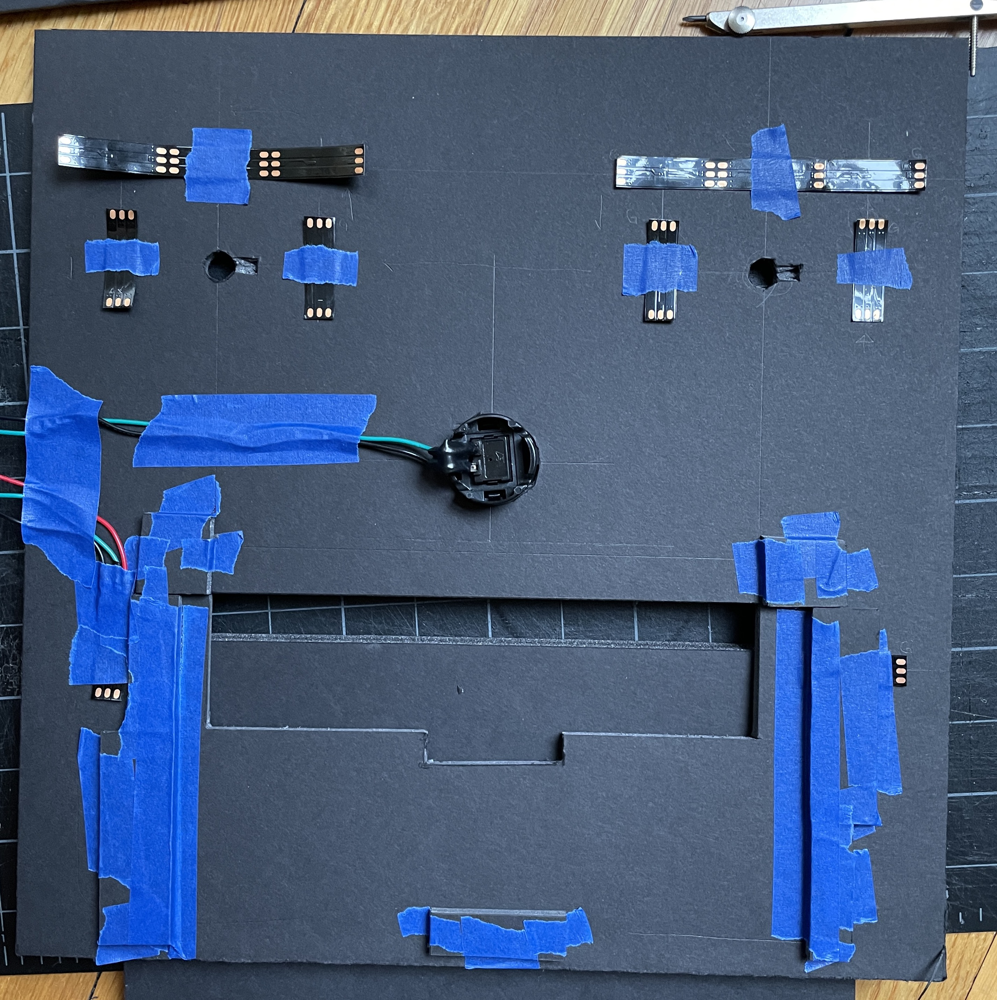
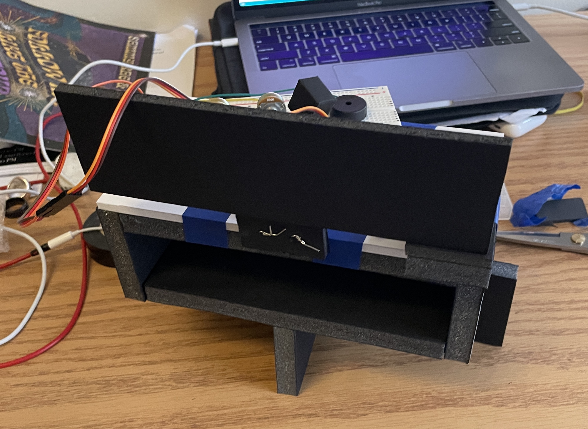
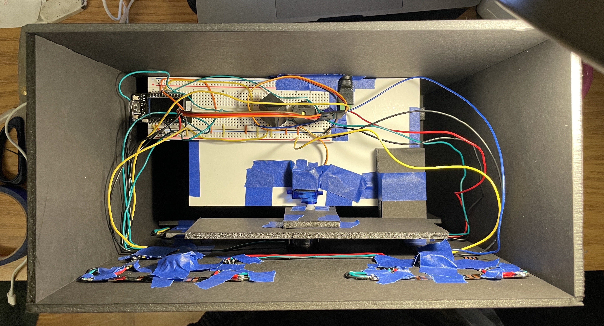

This ESP32-controlled robot eats your phone for specified durations, in order to help you focus.
Use the two potentiometers to dial in your desired focus time, put your phone in its mouth, close its mouth,
and press its nose to start the timer.
If you try to open its mouth during focus time, FOCUSBOT will scream at you. You also can't access the
inside of its mouth anyways!
Once focus time is up, FOCUSBOT will chirp to let you know time is up. You'll then be able to reach inside
its mouth and retrieve your phone.
ARTISTIC VISION
As I was thinking of a final project idea, I kept getting distracted by my phone instead of actually
brainstorming ideas. I'll often throw my phone onto my bed to force myself to focus, and I wanted to
implement some sort of physical barrier to make it even harder to get distracted. I also wanted to use
a piezo buzzer and a light sensor, as I've never used those components before. Thus, I came up with the idea
for a robot that physically blocks you from accessing your phone and also gets angry at you if you try
to cheat.
REPRODUCTION
Technical reproduction information is available at the github repo.
FABRICATION
This project (like prev. projects) required some fancy LED wiring to connect the brow lights
as one strip and the cheek lights as a second strip.

I had some issues with the servo motor that rotates in a blocker during focus time - because
the motor is relatively weak and the panel was unbalanced, it would sometimes shake uncontrollably
when rotating into the unblocked position. I eventually solved this problem by placing a block on the
right side to stabilize its final position.

The rotating block also made it trickier to wire everything up on the inside, as I had to make sure
the wires wouldn't get in the way. I made sure to push all the wires to the side as much as possible.

CODE WALKTHROUGH
I used the TickTwo library to handle the timed portion of FOCUSBOT,
since it allows for parallel processing (or near enough), so the ESP32 can
keep track of time elapsed, monitor light levels, and react to light all
at the same time.
The main loop is broken into two if branches: when the timer isn’t running, and when the timer is running.
When the timer isn’t running, the ESP32 monitors potentiometer readings and updates the brow lights accordingly, using the potLightUpdate() function.
if (!timerGoing){
//get input reads
int STARTstate = digitalRead(START); //button
int pot1state = analogRead(POT1); //pot1
int pot2state = analogRead(POT2); //pot2
//pot LED selections
int read_interval = pot1state/819;
int read_increment = 5 + pot2state/819;
//update interval lights based on pot1 read
if (read_interval != curr_interval){
potLightUpdate(curr_interval, read_interval);
curr_interval = read_interval;
}
//update increment lights based on pot2 read
if (read_increment != curr_increment){
potLightUpdate(curr_increment, read_increment);
curr_increment = read_increment;
}
...
}
void potLightUpdate(int currval, int readval){
int diff = currval - readval;
if (diff == -1){ //read greater than curr, add one light
browPixels.setPixelColor(readval - 1, browPixels.Color(255, 255, 255));
browPixels.show();
}
else if (diff == 1){ //read less than curr, remove one light
browPixels.setPixelColor(currval - 1, browPixels.Color(0, 0, 0));
browPixels.show();
}
}
It also monitors the button state. If the button is pressed, it calculates the number of blinks (every half-second) each right-brow light will need, tells the servo to rotate the blocker into place, starts the main timer, and sets the cheeks to red.
//start the timer on button press
if (STARTstate != curr_button and STARTstate == 0){ //if button is pressed
Serial.println("button pressed");
if (curr_interval > 0 and curr_increment > 5){ //if time has been set
//number of milliseconds
int numMillis = timeVals[curr_interval - 1] * timeVals[curr_increment - 1];
currBlinker = curr_increment; //pixel array address of first LED to blink
int numBlinks = numMillis / 1000 * 2; //total number of blinks
int numBlinkers = currBlinker - 5; //total number of blinkers
blinksPerBlinker = numBlinks / numBlinkers;
//debugging....
int numMins = numMillis / 1000 / 60;
Serial.print("Timer set to ");
Serial.print(timeDesc[curr_interval - 1]);
Serial.print(" x ");
Serial.println(timeDesc[curr_increment - 1]);
Serial.print("Starting timer for ");
Serial.print(numBlinks / 2);
Serial.println(" secs");
Serial.print(numBlinks);
Serial.println(" blinks");
Serial.print("curr Blinker ");
Serial.println(currBlinker);
Serial.print("blinks per blinker ");
Serial.println(blinksPerBlinker);
closeGate(); //servo rotate into place
//start timer
timer.start();
timerGoing = true;
//set cheeks to red
cheekPixels.setPixelColor(0, cheekPixels.Color(0, 255, 0));
cheekPixels.setPixelColor(1, cheekPixels.Color(0, 255, 0));
cheekPixels.show();
}
curr_button = STARTstate; //save current button state
}
The callback function for the main timer blinks the current right-brow light every half-second.
//callback function to blink LED
void blinkLight() {
if (!lightState){
browPixels.setPixelColor(currBlinker - 1, browPixels.Color(255, 255, 255));
browPixels.show();
}
else{
browPixels.setPixelColor(currBlinker - 1, browPixels.Color(0, 0, 0));
browPixels.show();
}
lightState = !lightState;
Serial.println(timer.counter());
}
When the timer IS running, the ESP32 first checks whether the LDR senses light or not. If it does, it tells the piezo buzzer to start screaming, and also starts the alarm timer. It also monitors for when the LDR stops sensing light, in which case it silences the piezo and stops the alarm timer.
I used the ledc functions to control the piezo, as the normal tone() library for Arduino doesn’t work with ESP32s.
The callback function for the alarm timer blinks the red cheek lights every quarter-second.
After checking the LDR state, the ESP32 next checks whether the current right-brow blinker has blinked for its entire allotted time. If the current blinker is done blinking, and there are still LEDs left to blink, the ESP32 , resets the main timer and starts blinking the next LED.
//if timer hits blinker limit
if (timer.counter() == blinksPerBlinker){
//if there are more LEDs left to blink
if (currBlinker > 6){
browPixels.setPixelColor(currBlinker-1, browPixels.Color(0, 0, 0));
browPixels.show();
currBlinker -= 1; //move on to the next LED
lightState = true;
timer.start(); //restart timer
Serial.println("restarting timer");
Serial.println("current blinker");
Serial.println(currBlinker);
}
...
}
If all the LEDs are done blinking, the ESP32 stops both timers, tells the servo to rotate the block out of the way, turns off all brow LEDs, sets the cheeks to green, and tells the buzzer to chirp the all-clear.
//else if all LEDs are done blinking
else{
//stop timer
timer.stop();
timerGoing = false;
Serial.println("timer stopped");
alarmTimer.stop();
openGate();
//set all timer leds off
for (int i =1; i < 11; i++){
browPixels.setPixelColor(i-1, browPixels.Color(0, 0, 0));
}
//set cheeks to green
cheekPixels.setPixelColor(0, cheekPixels.Color(255, 0, 0));
cheekPixels.setPixelColor(1, cheekPixels.Color(255, 0, 0));
cheekPixels.show();
//chirp buzzer
if (!buzzerAttached){
ledcAttachPin(BUZZER_PIN, BUZZER_CHANNEL);
}
chirpBuzzer();
//relight pot leds
relightPots();
curr_button = 1; //reset button state for next timer
}
The chirpBuzzer() function again uses the ledc functions to control the piezo.
After all these resets, the ESP32 also repolls the potentiometer settings (in case they were changed during focus time) and relights the brow LEDs accordingly, using the relightPots() function.
//resets lights according to pots (in case of reset or if they were moved during timer)
void relightPots(){
delay(1000);
int pot1state = analogRead(POT1); //pot1
int pot2state = analogRead(POT2); //pot2
//pot LED selections
int curr_interval = pot1state/819;
int curr_increment = 5 + pot2state/819;
//light increment LEDs
int i = curr_increment;
while (i > 5){
browPixels.setPixelColor(i-1, browPixels.Color(255, 255, 255));
i -= 1;
}
//light interval LEDs
i = curr_interval;
while (i > 0){
browPixels.setPixelColor(i-1, browPixels.Color(255, 255, 255));
i -= 1;
}
browPixels.show();
}